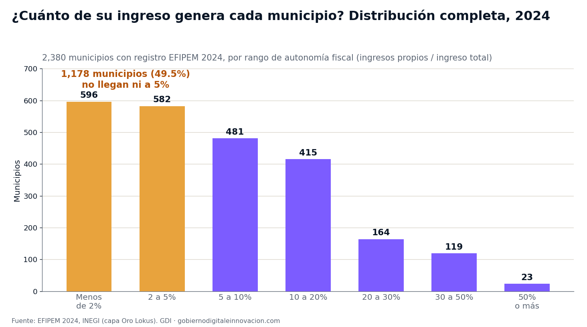
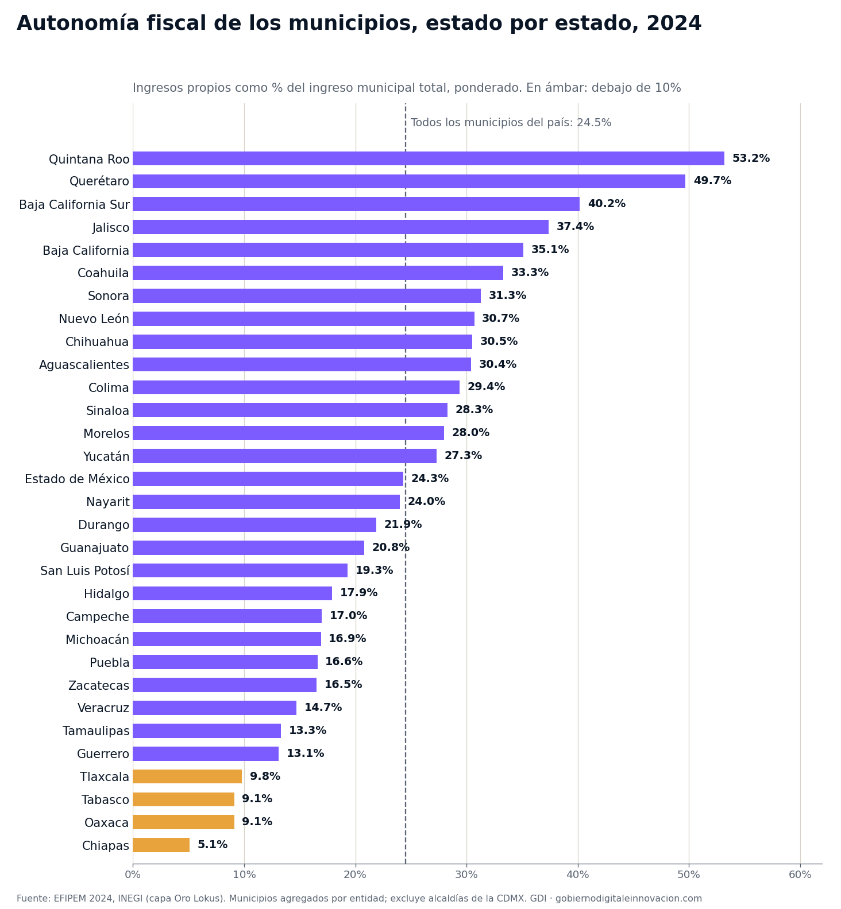

La pregunta con la que arrancó este análisis fue abierta: ¿qué municipios de México se pagan solos y cuáles viven casi por completo de la federación — y qué tienen en común unos y otros? Para responderla ordenamos el universo completo — los 2,380 municipios que reportaron sus finanzas en EFIPEM 2024 — por su autonomía fiscal: la proporción de su ingreso total que generan ellos mismos con impuestos (el predial ante todo), derechos, productos, aprovechamientos y contribuciones de mejoras. Sin preseleccionar territorios. El patrón que emergió es más duro que cualquier hipótesis previa.
En conjunto, los municipios del país administraron $708 mil millones de pesos en 2024. De cada 100 pesos de ese ingreso, 24.5 se generaron localmente y 71.1 llegaron de participaciones y aportaciones federales. Pero ese promedio ponderado — que las grandes ciudades sostienen — esconde la distribución real: la mitad del país municipal opera con menos de 5% de ingresos propios.
La distribución completa: el sótano es enorme

Los números de la distribución no admiten lectura amable: 596 municipios (uno de cada cuatro) no generan ni 2 de cada 100 pesos que ejercen; 1,178 (el 49.5%) no llegan a 5. En el otro extremo, apenas 142 municipios superan el 30% de autonomía y solo 23 en todo el país generan la mitad o más de su propio ingreso. La autonomía fiscal municipal en México no es una escala continua: es una pirámide con una base enorme pegada al piso.
dependen en 99% o más de las transferencias federales en 2024 — en 2003 eran 146. El grupo que vive por completo de la federación no se está reduciendo: está creciendo.
El mapa estatal: de Quintana Roo (53%) a Chiapas (5%)

Agregados por entidad, los municipios de Quintana Roo (53.2%), Querétaro (49.7%) y Baja California Sur (40.2%) encabezan la tabla — turismo e industria con catastros que cobran. En el fondo, los municipios de Chiapas generan apenas 5.1% de su ingreso; los de Oaxaca y Tabasco, 9.1%; los de Tlaxcala, 9.8%. Entre el primer lugar y el último hay una brecha de 10 a 1: por cada peso propio que logra un municipio chiapaneco promedio, uno quintanarroense genera diez.
Los que se pagan solos: playa, nave industrial y suburbio premium
El grupo de municipios con mayor autonomía no corresponde al cliché del "norte rico". Ordenando el universo completo, los extremos altos son tres tipos de territorio muy concretos:
- La playa: Puerto Morelos (68.4%), Tulum (63.3%), Cancún (63.0%), Isla Mujeres (62.1%) y Playa del Carmen (59.1%) — todo el litoral de Quintana Roo — más Bahía de Banderas (58.9%), Puerto Peñasco (56.7%) y Los Cabos (53.5%).
- La nave industrial: El Marqués (68.4%), Querétaro capital (60.0%), Ramos Arizpe (59.8%), Arteaga (59.2%), Ciénega de Flores (52.3%) y Villa de Reyes (50.0%) — los corredores manufactureros del Bajío, Saltillo y Monterrey.
- El suburbio de alta plusvalía: Huixquilucan (56.9%), Zapopan (50.8%) y San Pedro Garza García (48.4%), que recauda $12,402 pesos por habitante solo en impuestos — la cifra más alta del país entre municipios de más de 100 mil habitantes.
Lo que comparten no es geografía sino base gravable: propiedad inmobiliaria de alto valor — hoteles, naves, vivienda residencial — y actividad económica formal sobre la cual cobrar predial, derechos y licencias. Donde eso existe y el catastro funciona, el municipio se paga solo.
La alerta: 37 ciudades que no cobran
La lectura fácil sería que la dependencia extrema es cosa de municipios rurales diminutos. Es falsa a medias: el gradiente por tamaño existe — los municipios de menos de 5 mil habitantes promedian 4.7% de autonomía ponderada y los de más de 500 mil, 35.6% — pero 37 municipios de más de 50 mil habitantes operan con menos de 5% de ingresos propios. No son pueblos: son ciudades enteras que no cobran.
| Municipio | Población (2020) | Autonomía fiscal | Dependencia federal |
|---|---|---|---|
| Ocosingo, Chis. | 234,661 | 1.9% | 95.3% |
| Las Margaritas, Chis. | 141,027 | 0.8% | 96.7% |
| Chilón, Chis. | 137,262 | 1.1% | 94.2% |
| Huejutla de Reyes, Hgo. | 126,781 | 4.1% | 84.8% |
| Villaflores, Chis. | 109,536 | 3.6% | 96.4% |
| Villa Victoria, Méx. | 108,196 | 4.4% | 92.2% |
| Centla, Tab. | 107,731 | 3.6% | 96.4% |
| Chamula, Chis. | 101,967 | 0.0% | 94.2% |
Municipios de más de 100 mil habitantes con autonomía fiscal menor a 5% en 2024. Fuente: EFIPEM 2024, INEGI; población del Censo 2020.
El caso extremo es Chamula, Chiapas: 102 mil habitantes, un presupuesto de $743 millones de pesos en 2024 y una autonomía fiscal de 0.0% — su recaudación propia es tan pequeña que no alcanza ni una décima de punto porcentual de su ingreso. Ocosingo, con 235 mil habitantes y un territorio más grande que varios estados, genera 1.9 de cada 100 pesos que ejerce.
Implicaciones para la gestión pública
1. El predial es la reforma municipal más rentable que casi nadie hace
La diferencia entre un municipio de 5% y uno de 30% de autonomía rara vez es la riqueza de su gente: es la existencia de un catastro actualizado, valores unitarios realistas y voluntad de cobrar. Los municipios turísticos e industriales del top no tienen tasas extraordinarias — tienen bases catastrales que reflejan el valor real de la propiedad. Modernizar el catastro es la inversión con mejor retorno fiscal disponible para una tesorería municipal, y existen programas federales y estatales de acompañamiento para hacerlo.
2. Dependencia extrema es fragilidad extrema
Un municipio que financia 99 de cada 100 pesos con transferencias está expuesto por completo a decisiones que no controla: fórmulas de distribución, ciclos de la recaudación federal participable, recortes. Para 230 municipios, una caída de la bolsa federal no es un ajuste: es la nómina y el alumbrado. La primera línea de cualquier análisis de riesgo financiero municipal debería ser este indicador.
3. Las ciudades que no cobran renuncian a gobernar su crecimiento
En municipios de 100 y 200 mil habitantes con autonomía menor a 5%, el problema ya no es solo de ingresos: sin predial ni derechos funcionando, el gobierno local carece del instrumento que ordena el uso de suelo, registra la propiedad y captura una parte de la plusvalía que su propio crecimiento genera. La debilidad fiscal y la debilidad territorial son la misma debilidad.
4. El indicador pertenece en el diagnóstico de todo plan municipal
La autonomía fiscal del municipio, su serie histórica y su comparación con municipios similares están disponibles públicamente en EFIPEM. Un Plan Municipal de Desarrollo que no diagnostica de qué vive su hacienda — y qué pasaría si las transferencias se contraen — está planeando sobre un supuesto, no sobre un dato.
Conclusión
México tiene 23 municipios que se pagan solos y 230 que viven por completo de la federación. Entre esos dos extremos, la mitad del país municipal opera sin hacienda propia en cualquier sentido significativo del término. El dato más incómodo no es la foto sino la película: veinte años de EFIPEM muestran que el promedio nacional mejora porque las grandes ciudades cobran cada vez mejor, mientras el grupo de dependencia total se agranda. La federalización del ingreso municipal fue diseñada como un piso de equidad; en cientos de municipios se ha vuelto el techo de la capacidad de gobernar. Y la diferencia entre un lado y otro del mapa — lo muestran la playa, la nave y el suburbio — no es destino: es catastro, cobro y decisión administrativa.
¿De qué vive la hacienda de tu municipio?
En la plataforma de GDI puedes consultar los ingresos, egresos, autonomía fiscal y su serie histórica completa — junto con población, pobreza y economía — de cualquier municipio de México, y construir el diagnóstico financiero de tu administración en minutos.
Explorar mi territorioDatos técnicos
Fuente principal: INEGI, Estadística de Finanzas Públicas Estatales y Municipales (EFIPEM), serie 2003-2024, consultada en la capa de datos validada de Lokus. Universo 2024: 2,380 municipios con registro (los municipios restantes no reportaron ese ejercicio; los comparativos 2003 usan los 2,324 reportantes de aquel año). Montos en pesos corrientes de cada ejercicio.
Definiciones: autonomía fiscal = (impuestos + derechos + productos + aprovechamientos + contribuciones de mejoras) ÷ ingreso total; dependencia federal = (participaciones + aportaciones) ÷ ingreso total. No suman 100% porque el financiamiento (deuda), las disponibilidades y otros ingresos completan el total. Los agregados "ponderados" dividen la suma de ingresos propios entre la suma de ingresos totales del grupo.
Fuentes complementarias: INEGI, Censo de Población y Vivienda 2020 (población municipal para cortes por tamaño y per cápita). Metodología distinta a EFIPEM: se usa solo como denominador poblacional y se cita por separado.
Nota metodológica: se analizó el universo completo ordenado por la métrica, sin preselección de territorios. Las 16 alcaldías de la Ciudad de México reportan bajo un régimen presupuestal distinto y EFIPEM no calcula su autonomía fiscal, por lo que quedan fuera del comparativo municipal. La autonomía de 0.0% de Chamula corresponde al redondeo a un decimal del indicador publicado.
Análisis: GDI — Gobierno Digital e Innovación · Fecha de análisis: 31 de julio de 2026 · gobiernodigitaleinnovacion.com